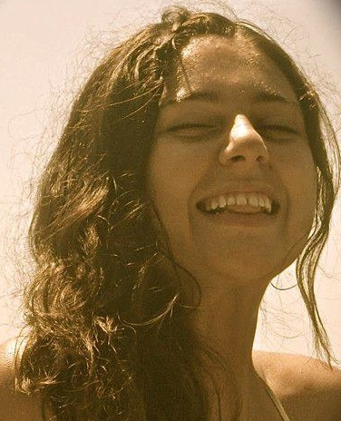
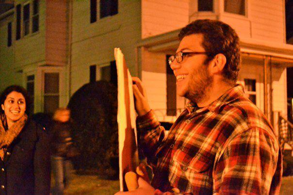
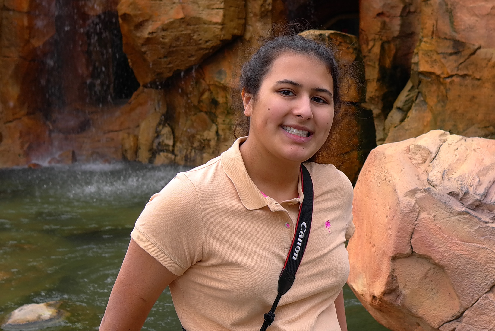
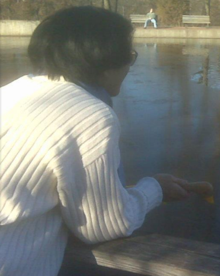
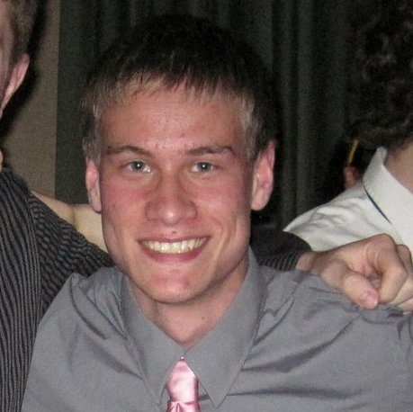
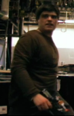

The Story
It all began in the fall of 2010 when two Northwestern University
students decided that they wanted to push the boundaries of student
filmmaking. Sarah Jane Inwards and Alec Ziff embarked on a mission
to make a feature-length film (90 minutes or longer) and choose a
charity that would receive all of the proceeds. While the process
would be strenuous, that did not stop them. Applause for a Cause was
born.
With the help of NU Channel 1, Inwards and Ziff led a team of 70 students (from
freshman to seniors) who acted in, wrote, produced, edited, and directed
Applause for a Cause's first feature. Over 300 moviegoers attended the red
carpet premiere of RUΣH on May 20th, 2011. Applause raised over $1,500 for the
Ronald McDonald House near Memorial Hospital in Chicago.
But that was only the beginning.
Applause for a Cause is here to stay, currently in production on its second
feature, Experience for Beginners, the proceeds from which will benefit the
Make-A-Wish Foundation. Applause now encompasses more students, a larger budget,
and its own equipment. Yet Applause’s vision remains the same: students have the
power to create professional, industry-quality films while doing so for a
greater good.
Cast & Crew
Sarah Jane Inwards
Co-director/producer
SJ is proudly from Minnesota and has been in Applause for a Cause since 2008. SJ has worn a fake pregnancy belly on two occasions (being Juno and Bristol Palin) and sympathizes with Julia because those things are hot. SJ loves the Make a Wish Foundation's mission and can't wait to raise money to further their amazing work! SJ is so pumped to be working with returning Applause members from last year and equally excited to get to know the new members. She is also pumped to bust out her prom dress again for this year's premiere.

Alec Ziff
Co-director/producer
Alec Ziff is a junior Film major at Northwestern University. Alec spent the summer of 2011 in Los Angeles writing and developing original television pilots that are currently being pitched to agencies. While not on film sets Alec is watching films, playing hockey, or cheering on the Patriots and New Jersey Devils. Alec is very excited to co-direct Applause's 2011-2012 feature film, Experience for Beginners, this winter.
Sean Gransee
Publicity Head
Sean is a sophomore computer science major from the suburbs of Chicago. He got involved with Applause For a Cause last year as an assistant editor, and he's back for another year of excitement as the publicity head.

Amina Dreessen
Assistant Director
Amina Dreessen, assistant director, is a freelance travel guide and non-practicing vegetarian. Her film-directing experience includes directing a ten minute absurdist play in high school and starring in spy films co-produced by her brother at the age of 7. She loves movies and hates fatal illnesses that affect children.

David Marrero
I'm David, freshman, from The Bronx, NY, and I am super duper excited to edit the movie!
Natalie Houchins
Natalie Houchins is a Sophomore from Austin, Texas double majoring in Theatre and Gender Studies. This is her first time appearing in a film at Northwestern. In addition to student theatre, Natalie is also involved in Greek life, Women's Club Rugby, and leading workshops at the Women's Center. She would like to thank her family, friends, and Pat for their love and support. Go 'Cats!

Kara Reddy
Kara Reddy is an RTVF junior, hoping to become a writer and director. She enjoys listening to music (particularly film scores, indie rock, and electronic) reading (her favorite authors are currently JK Rowling and Jorge Luis Borges) and knitting. While she has worked on several short film sets before, she has never worked on a feature length film and is excited for the prospect of helping to make one :D

Rachel Vrabec
Legal Producer
Rachel is a Junior studying Political Science and IMC who has a passion for scouting film locations. She was a part of Applause for A Cause last year and is excited to be back for another year.

Tom Schimandle
Director of Photography
Tom Shimandle is a junior RTVF and Economics major. He enjoys overanalyzing TV comedies, taking long showers, and loudly rapping along to contemporary hip-hop. He also enjoys sarcasm and being inappropriate. He thinks he's hilarious. Tom is thrilled to have the opportunity to be Director of Photography for Experience for Beginners.
Brian Lasman
Hailing from the Boston area, I'm a freshman who is super pumped to be working with the budget and finances for this film. I have really no idea what I want to do with my life after college, so don't ask (but ideas would be appreciated). If any of you are fans of reality television, I'm a much more obsessive fan than you, but much to the dismay of pretty much everyone I know, I still love talking about it, so hit me up!

Emily Ryles
Emily is a proud citizen of the bay area. Her favorite color is glitter and loves coloring. She is a communication studies major and a member of Elder Residential Community.

Julia Duray
Dulcinee DeGuere
Dulcinee was born in San Francisco, CA and later moved to Los Angeles to accommodate her dad's job as a screenwriter/show-runner in Hollywood. She started performing at a very young age, in both musical and theatrical settings. During her time at boarding school, she kept singing and acting at every opportunity she could get her hands on. Now an RTVF major, she's thrilled to be learning more about film, the medium in which she hopes to pursue her artistic goals. She's ecstatic to be working on Experience for Beginners and to merge her love for acting and film!
Amy Reed
Co-financial Producer
Amy Reed is a junior studying Radio/Television/Film and Creative Writing for the Media. She is excited to be a co-financial producer for Applause for a Cause this year! Other than working on this great feature, she is a producer for another Northwestern student film, a co-coordinator for the volunteer organization Project Eye to Eye, and a member of the Titanic Players team Floozy Newt.

Joe Deng
Joe Deng grew up in a quiet neighborhood. One day he realized he wanted to explore the world and thus began an incredible adventure. His current location is Northwestern University where he studies psychology, film, and pre-med. He hopes his journey takes him to the moon someday.
Chad Eschman
Chad Eschman is an Northwestern MFA student in Writing for the Screen and Stage. He is a founding member and former Co-Artistic Director of Cardboard Box Theatre Project, a company focused on ensemble creation of new works for the stage. Chad is originally from the Bay Area of California.
Becky Canfield
Becky Canfield is a freshman biology major hailing from St. Louis, Missouri. She aspires to go into the medical field after graduating. She is excited to be working on a set for the very first time and would like to thank the Applause for a Cause exec board for the opportunity.

Colton Maddox
I'm a sophomore from Plymouth, Indiana majoring in Radio/TV/Film. I've had the opportunity to work on the sets of numerous short films here at Northwestern, but Experience for Beginners will be my first chance to work on the set of a feature. I'm sure it will be no walk in the park, but if I said I'd rather spend my Fridays, Saturdays, and Sundays doing anything other than making movies, I'd be lying.
Crystal Kim
Crystal Kim is a sophomore RTVF and Art Theory and Practice major. She is a Korean American, Georgian, Christian, artist, musician, dreamer, and more.
Ryan Anderson
Sound Designer
Ryan has been working with sound for almost his entire life and has a wide background in its different applications. Throughout high school and middle school he was the sound designer for all school theater productions, often with two people working under him. This lead to audio for video. He has worked with various New York metropolitan area companies on various documentaries. He also has experience with larger scale live audio productions. Ryan also has an interest in nature photography, sailing, and biology which to many people’s surprise he is majoring in.
Cory Ryncarz
Coming to you from Texas, I'm Cory and am an avid follower (and contributor!) of films, football and (insert groans) video games. Applause for a Cause attracted me because it not only offers a chance to learn while working on a film, but I can also help others in the process. In terms of lavish dreams, I just want to someday find myself in a comfortable, respectable situation where I can creatively influence media that can inspire the minds and curiosity of others in the way it has for me.

Sam Hazlett
Head Editor
Sam is a Junior Film Major from New Jersey. He wants to be a writer and director in Hollywood. In high school, he decided to quit the sports teams and direct, write, star in, and edit a two hour action movie, which he eventually screened for a bunch of people at the end of his senior year. Experience for Beginners is the fourth feature film of which he is the head editor.